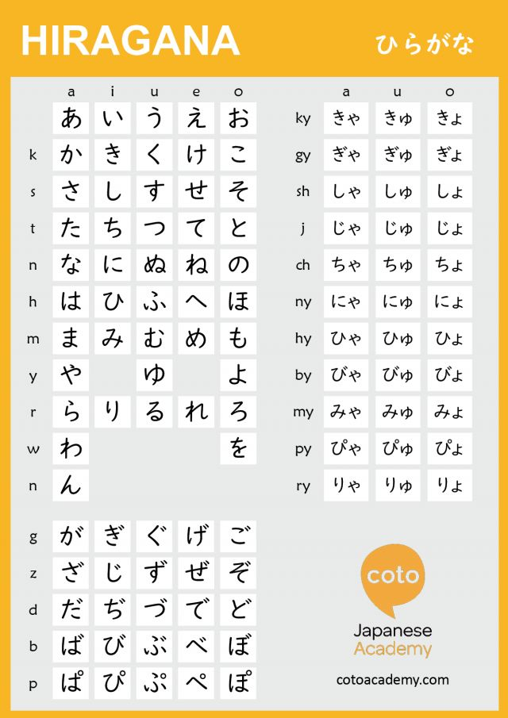
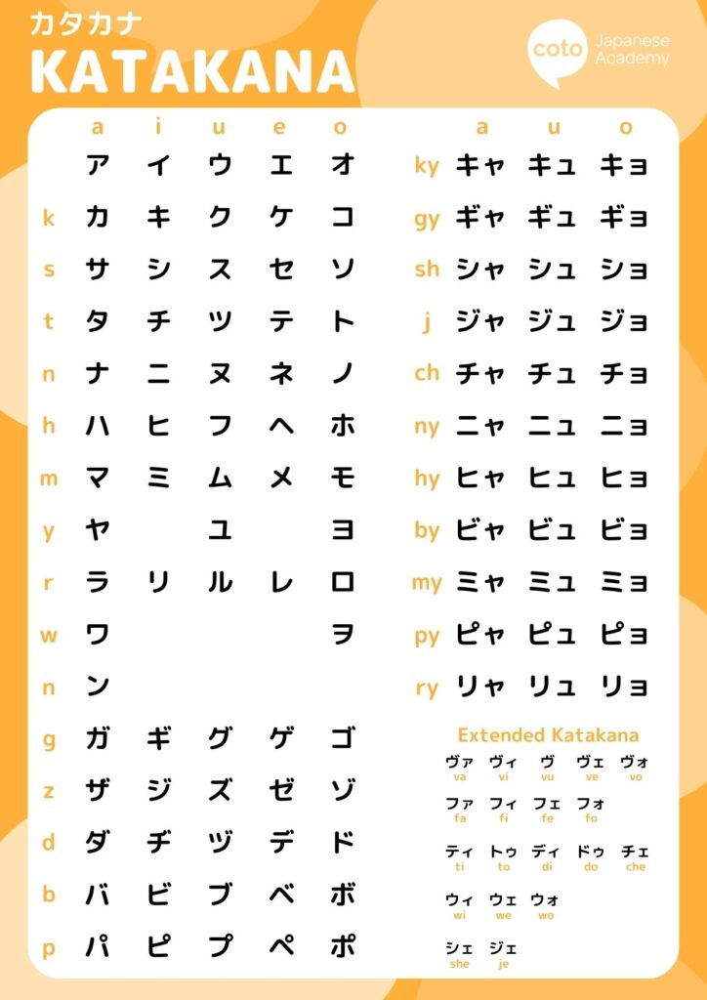

Your guide to mastering Hiragana and Katakana scripts.
Explore the fascinating world of Japanese scripts including Hiragana and Katakana.Learn their origins, usage, and practice writing them with our interactive tools.
Hiragana is one of the two primary syllabaries used in the Japanese writing system. It consists of 46 basic characters, each representing a specific syllable sound. Hiragana is primarily used for native Japanese words and grammatical elements.

Katakana is the other primary syllabary in Japanese, also consisting of 46 basic characters. It is mainly used for foreign loanwords, onomatopoeia, technical and scientific terms, as well as for emphasis.
